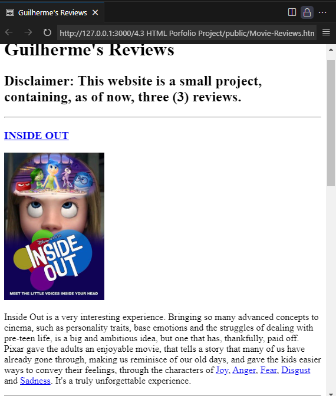
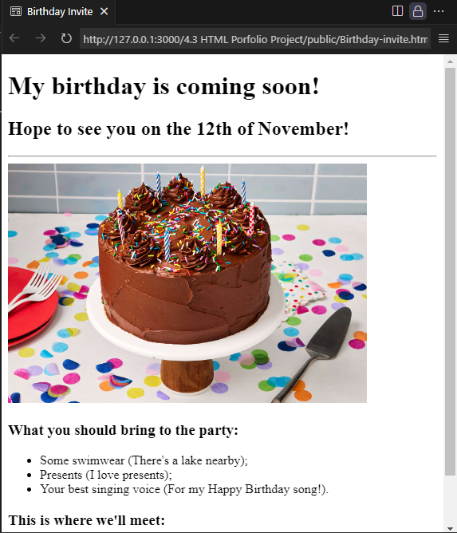

A small website made to better understand anchors and images, as well as their tags. It was the first project made in the course. The movie review's are honest to Guilherme's opinions.

A birthday card made as the second website project in Angela's course, aiming to further develop student's ability with the HTML language.
